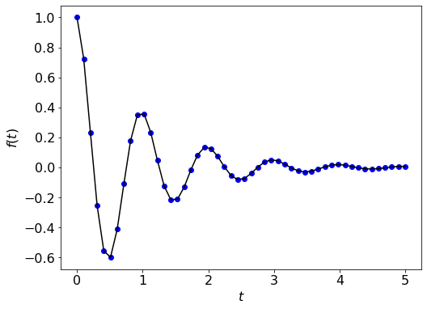

Function plot
We can plot functions in the following way:
import matplotlib.pyplot as plt
import numpy as np
%matplotlib inline
# define the function
def f(t):
return np.exp(-t) * np.cos(2*np.pi*t);
t = np.linspace(0, 5, 50);
plt.figure(figsize = (8, 6));
plt.rcParams.update({'font.size': 16});
plt.plot(t, f(t), 'bo', t, f(t), 'k');
plt.xlabel('$t$');
plt.ylabel('$f(t)$');
plt.show();
